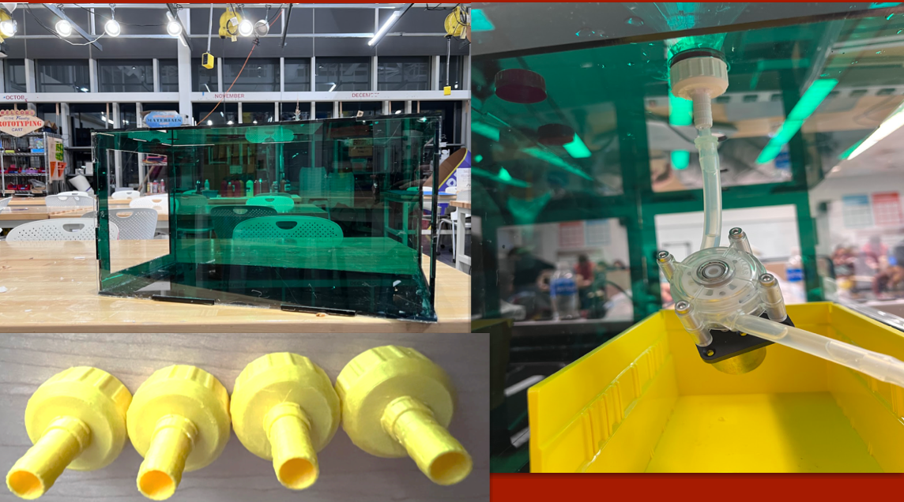
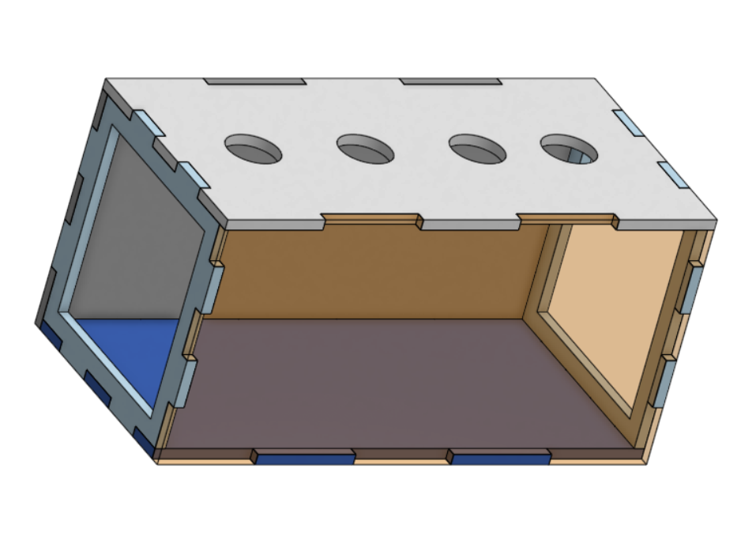
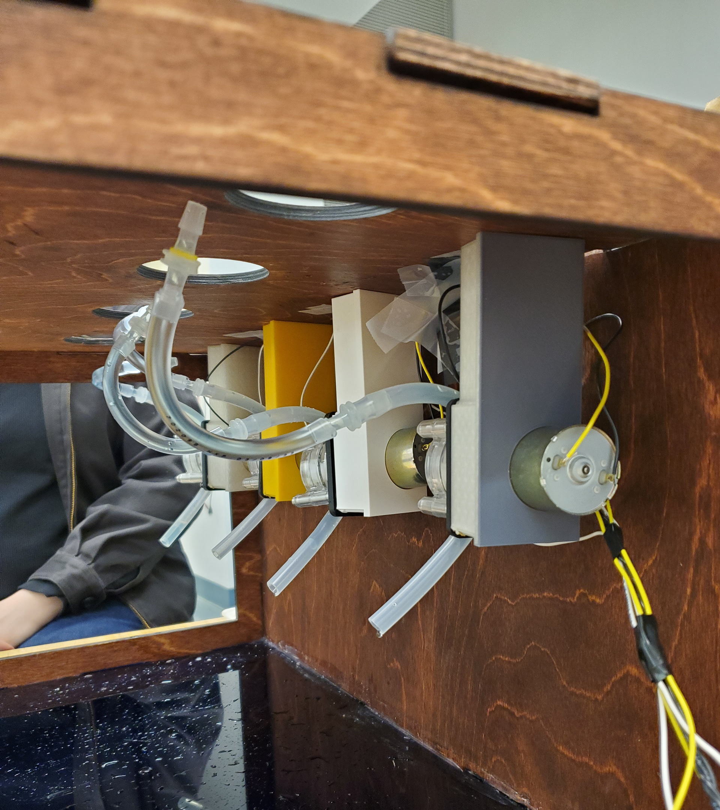
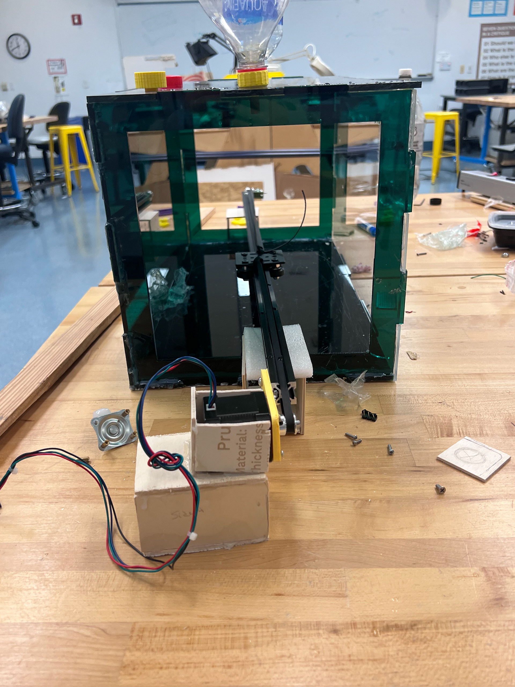

Principles of Integrated Engineering


For my class Principles of Integrated Engineering (PIE), the first semester of my sophomore year, I worked with a team of 3 other students to create an automatic drink dispenser.
Here is the link to our website that includes all documentation of our process.
My team did not include a mechanical engineer so for the project I found myself stepping into that role. I spent my time CADing the outer housing for all the components, bottle cap to tubing attachment, pumps, and rail holders. For the last week of the semester, I focused on how we would integrate a gantry belt-like system to have the cup automatically move underneath the dispensers, but because of financial and time limitations this aspect of the project never fully came to fruition.
Here is a link to all the CAD I designed for the purposes of this project, saved in GrabCAD.

